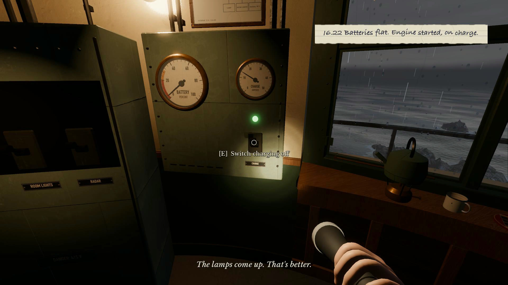
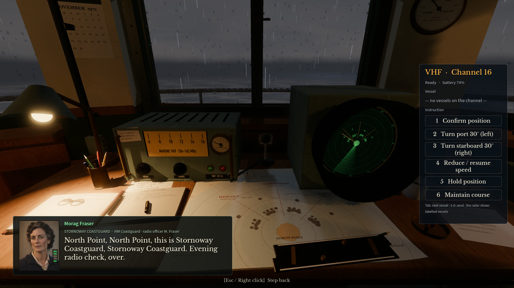
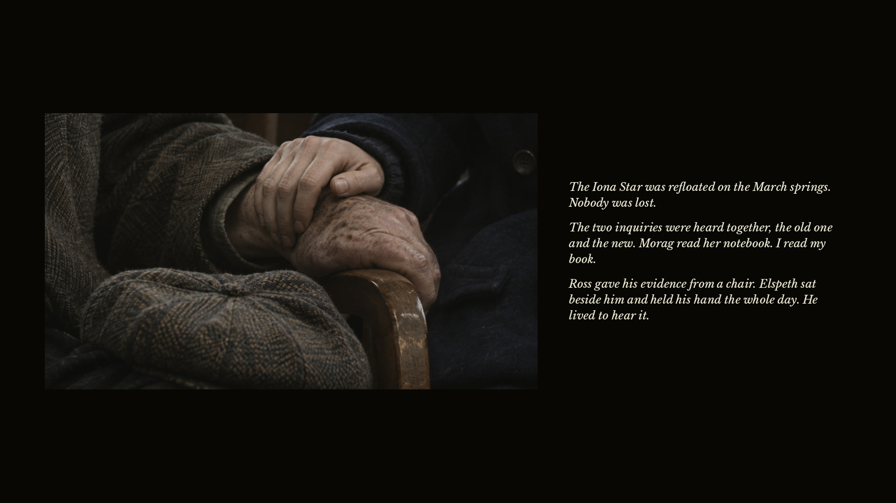

Откъс от трейлъра (0:18–0:40 от 1:17) · гласът е генериран с ElevenLabs; в самата игра няма озвучаване
Как се играе
Без ток радиото мълчи — и историята чака

Първо дежурствата: генератор, батерии, лампа.

След това радиото: шест заповеди към корабите.
Навън — бурята. Лъчът е всичко, което корабът има.
Автоматичен тест (story_test): без ток радиото не пуска разказа — dead_radio_play=false
Кадри от играта (build R7)
Какво се случва при един отговор
Всеки отговор оставя следа
# ch3.dlg — реплика на играча* I was there. The light was out
before she struck. -> admit
= admit! set admitted_to_morag=1
! add rel.morag 2
MORAG: ...Oh, Callum.
Отговор
Флаг
Морaг
„Дневникът е верен“
lied_to_morag
−2
„Какво значение има сега?“
deflected_morag
−1
„Бях там“
admitted_to_morag
+2
Отговорът променя флаг и отношение. По-късно те участват в избора на реплика.
Реален код от projects/games/last_light/godot/data/story/ch3.dlg
# ch6.dlg — сутринта, същият разговор за всички играчи[if has_flag("admitted_to_morag")] MORAG: You told me first. In the dark, with the set half dead. I'll remember that.
[if relation("morag") >= 2] MORAG: Kitchen table, Callum. I'll put the kettle on. Stornoway out.
Същата логика работи без интерфейс в morag_probe.gd
Контролирана проверка: начално отношение 0, спасен Iona Star; еднакъв избор сутринта:“Stornoway, North Point. Amend my station log, entry of fifteenth November 1953. Over.”
Излъгах в глава 3lied_to_morag · −2
“You told me at half past one that the log was right. I’ll not say anything about that on the air.”
„Каза ми, че дневникът е верен. Няма да го казвам по ефира.“
Отбегнахdeflected_morag · −1
“You asked me what it mattered, after eighteen years. Well. Now you know.”
„Попита ме какво значи, след осемнайсет години. Е, сега знаеш.“
Признахadmitted_to_morag · +2
“You told me first. In the dark, with the set half dead. I’ll remember that.” … “Kitchen table, Callum. I’ll put the kettle on.”
„Ти ми каза пръв. В тъмното, с почти мъртво радио.“ … „На кухненската маса, Калъм.“
А ако призная в глава 3, но сутринта мълча (“Nothing to report”), Морaг казва:
“Hours ago you told me the light was out before she struck. I’ll not put that in my log, Callum. You’ll have to.”
„Преди часове ми каза, че светлината е угаснала преди удара. Няма да го пиша в моя дневник, Калъм. Ще трябва ти.“
Изведено от диалоговия код на играта със зададени избори (build/morag_probe.gd)
Краят
Два избора, четири края
Корабът «Iona Star» е спасен
Корабът е загубен
Докладвам истината
Correction„Поправка“
Heard Together„Чути заедно“
Мълча
Nothing to Report„Нищо за докладване“
Light Exhibited Throughout„Светлината е горяла цяла нощ“

Край „Heard Together“ — кадър от играта (панелите са изображения на автора)
Финалът = истина на разсъмване × съдба на Iona Star. Ранният флаг за Morag променя реплики; сам по себе си не избира финал.
Резултат на story_test: и четирите края са достигнати от бот
Проверка
Какво е доказано — и какво не беше
Доказано с тест
97 разговора, 536 реда — 0 проблема
382 пътя през диалозите — без задънена улица
7 пълни преминавания с бот стигат и до четирите края
Другите набори: run_tests 95/95, opening_test 31/31, regress_test 503/503; pytest — без грешки
Не беше покрито — добавих
Тестовете не проверяваха точните реплики на Морaг в глава 6
Допълнителна проверка: 5 случая → 5 различни резултата morag_probe.gd
Не е тествано: Windows build; пълно ръчно изиграване с хронометър
Резултат от пускане на 25.11.2026 · tools/godot --headless … story_test.gd
Откровено за инструментите
Какво е мое и с какво е направено
Идея, посока, решения
Мои. Записани са в DECISIONS.md.
Код и Blender pipeline
С Claude Code като AI асистент, под мое ръководство и проверкаТестовете и записаните решения са начинът да проверявам какво е направено.
Портрети и крайни кадри
ChatGPT — изображения, които аз подготвих по общ шаблон
Музика
Suno (платен план) — 42 заготовки, подбрани от мен
Глас в трейлъра
ElevenLabs (безплатен план). В играта няма озвучаване.
Текстури, тела, звуци
CC0 (Poly Haven, Blender Studio, Freesound); лицензите са описани в хранилището
≈ 65–110 минутиТипично около 80 мин · изчислена оценка от два маршрута със спасен кораб · без кредити (+1–2 мин)
33
6
22
20
2
ДиалогИзбор на отговорЧакане и механика (ботът)Задачи, документи, обажданияКарти и край
Най-голяма неопределеност: колко време ще отнемат задачите при първо запознаване (за 37 задължителни стъпки допускам 8–35 с на стъпка) и колко ще се бави играчът с избора на отговор. Редовете се сменят сами; времето им е моделирано с приближение за страниците.
Метод и скриптове: competitions/john-atanasoff/build/playtime/METHOD.md
Какво отговорихте в началото?
1“The log is right.”
2“What does it matter now?”
3“I was there.”
В The Last Light това, което кажеш на радиото в полунощ, фарът ти го връща на разсъмване.